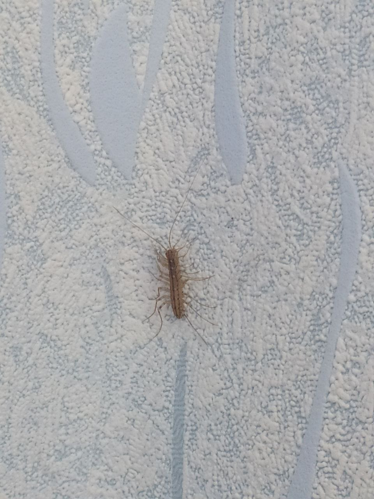

Дорогий щоденник!
День 505-й пошуку мужчини
Ранок
Сьогодні вихідний, клас. Виповзаю з ліжка і тиняюсь по кімнатах.
Холодно. Якась зараза вікно не зачинила на ніч. Поскаржилась на цю заразу мамі. Мама сказала, що все одно мене любить, навіть якщо я таке забудькувате. Кайф)
Зайшла на кухню. Поставила чайник. Тримаю в голові, що треба пити каву не зранку. Заварюю каву. Смачно.
Ввімкнула музику для настроюДень
Поприбирала. Відпочиваю. Помічаю нахабну особу, що повзає без дозволу по моїх шпалерах. Придивилась. То скутигера.
Ну бігай, раз ти в незрозумілому захисному статусі. То рідкісна то ні, то вносять в списки то вилучають. Назвала її Кузьмою.
Мухоловка звичайна або скутигера хатня. Довжина — до 5 см. Забарвлення жовтувате, вздовж тулуба проходять три темні смуги, також темні смужки є на ногах. Тіло складається з 7 члеників. Має 15 пар довгих ніг, які закінчуються м'якими лапками, що складаються з багатьох члеників та забезпечують швидке пересування, за секунду багатоніжка може долати до 40 см.
Довжина ніг збільшується від голови до задньої частини тулуба, у самиць остання пара ніг значно довше тіла. Вусики довгі. По боках голови є великі скупчення простих очей, які нагадують фасеткові очі комах.
Поверхня тіла вкрита водонепроникною кутикулою, що дозволяє мухоловкам жити у відносно сухих місцях. Будова дихальної системи також пристосована до сухого клімату. 7 пар дихалець, що розташовані на задніх сегментах тулуба, відкриваються не відразу у трахеї, а спочатку ведуть у парні повітряні мішки, від яких відходять пучки трахей. Цим досягається зменшення втрати води при диханні.
Кузьма знає як то маскуватись. Але я також не промах. Все бачу.
Вечір
Треба шукати мужчину, бо шось він сам не справляється з поставленою задачею. Зробила неймовірне - зареєструвалась на Баду. Виставила гарні фото. Чекаю. Шось ніхто не кличе заміж. Ну, я зробила, що могла.
Ооо, пише один. Почав красиво, з розмови про театр. Я аж оживилась. Але то ненадовго. Запитав, чи згодна я ж фразою "талановита людина талановита в усьому".
Я, замість того, щоб подумати, розписала на весь екран думку, що надузагальнення не працюють у нашому світі. Забагато вузьконаправлених галузей, а людина має обмежений ресурс, тож не може бути безмежної кількості талантів. Та і поняття "талант" не те, чим я б послуговувалась для позначення потенціалу. Здібності важливіші і дисципліна. Ці речі можуть зробити дива і привести до успіху навіть неталановиту людину.
І все
Втік. Написав "дякую за відповідь" і убіг. Та шо за життя.
Про деякі діалоги і говорити соромно. Якщо говорити коротко, то в світі є 4 масті карточні, але я стала представницею 5-ї неофіційної: дама дікпіків.